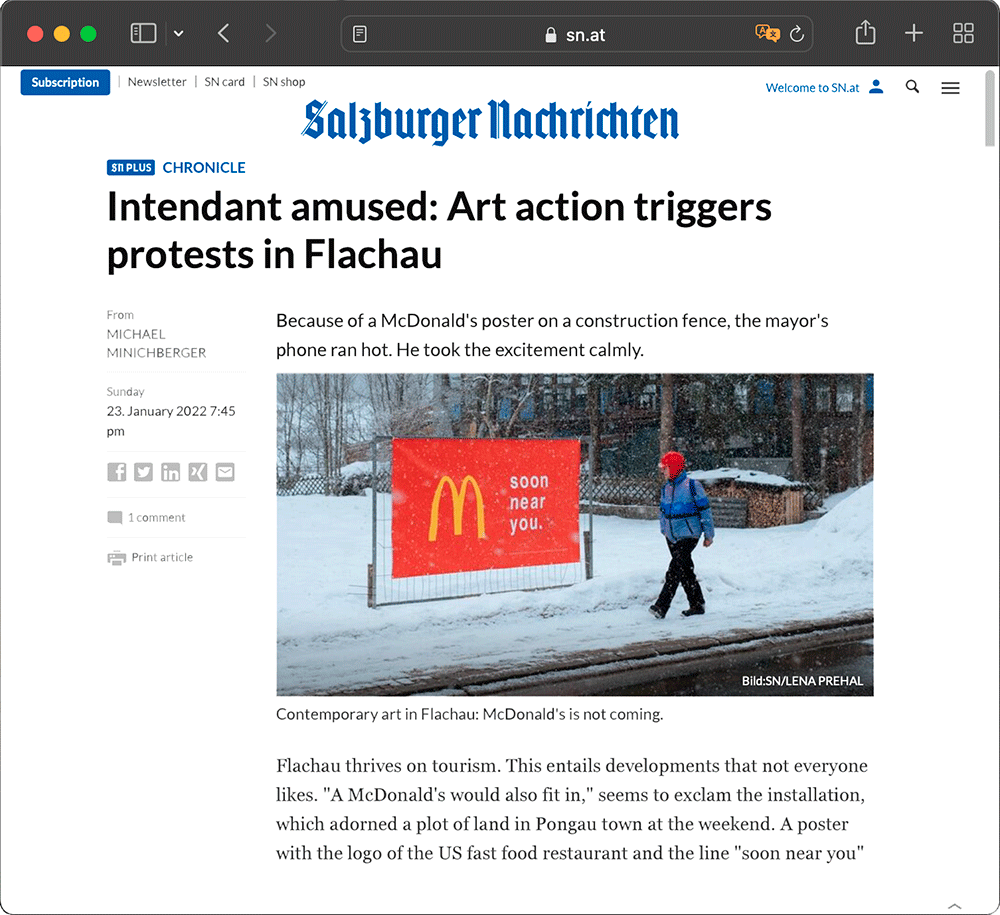

soon near you
intervenção,
flachau 2022.
"Se Flachau é um local turístico, especialmente nesta época do ano, e se a maioria das pessoas está aqui temporariamente, então em breve haverá um McDonald's perto de nós."
O festival minus20degrees "interpreta a paisagem de inverno existente como um laboratório para todas as expressões da arte". E o departamento de Social Design da University of Applied Arts Vienna, onde fiz erasmus, foi convidado a participar.
Pediram-nos para criar intervenções que de alguma forma levantassem questões sobre o desenvolvimento de Flachau e os efeitos ambientais e sociais do turismo de neve, (Flachau tem cerca de 2900 habitantes, em 2019 teve mais de 1,3 milhões de pernoites, principalmente para turismo de desportos de inverno).
A minha ideia foi, inves de criticar a situação atual, sugerir uma pequena mudança num futuro próximo e ver como os locais e turistas iriam olhar para ela. E achei que o logotipo do McDonald's, com todo o peso ambiental e ético que ele traz, obteria algumas reações.
O banner com a frase escolhida, "soon near us", foi colocado num terreno vazio da rua principal e pretende ser interpretado não só como um anúncio de uma nova construção (fictícia), mas também como um lembrete de que a maioria nós estamos lá apenas temporariamente. Pode até ser visto como um aviso.
O banner obteve reações e gerou algumas opiniões, exatamente como pretendido. O proprio Mayor Thomas Oberreiter comentou a hipotese levantada pelo projeto, num artigo dedicado ao mesmo, no jornal Salzburg Nachrichten, impresso em 24 de janeiro de 2022 e online.
Execução com Adva Eshel and Judith Haslöwer.
